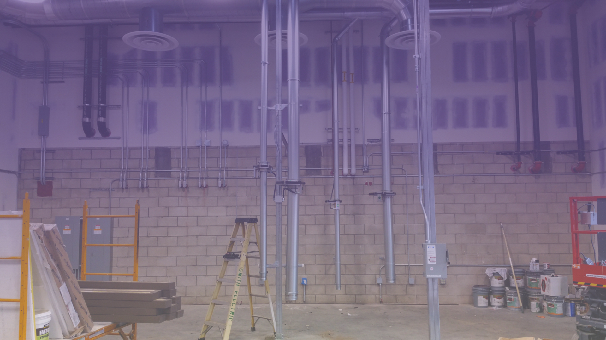

|  |
|---|
|
RCMakes is a community makerspace and industrial job shop operated by students and is located within the scene shop of Rancho Campana High School. RCMakes may be operated by students but it is managed by the serial entrepreneur and mechanical engineer, Dave Gross, who founded RCMakes as well as NewCo Foundation in 2017. Gross graduated University of California Santa Barbara with a Bachelors in Mechanical Engineering and Environmental Studies. Since then, Mr. Gross has used his education and skills in the fields of internet, aerospace, and alternative transportation. In the early stages of his career, he was responsible for designing electric and hybrid electric vehicles as well as hardware for various aerospace applications including the International Space Station, several missions to Mars, and the longest rigid structure ever deployed in space. Later on in life, Dave Gross gained interests in new ventures and became the founding CEO of Fastclick, a successful Internet advertising company later acquired by ValueClick in 2005. Under his leadership, Fastclick which started with $400K in capital raised to a $75M private-equity recapitalization in the span of 4 years. As he was approaching retirement at the age of 48, Gross decided to launch RCMakes with $250,000 to fund and setup a modern makerspace equipped with lasers, 3d printers, various saws, lathes, sanders, and other tools within the scene shop of Rancho Campana High School, an academy based school that promotes the fields of health science, performing arts, and engineering. RCMakes now provides dozens of internship opportunities, both paid and unpaid, to secondary and post-secondary students. It acts as a place that provides students with hands on experience in engineer and helps develop entrepreneurial skills. RCMakes incubates startups in which students have developed ideas for their own business and go through the process of marketing and selling their product or service to the community learning the realities of a startup company and gain pride of being directly involved in the decision-making process. |
|---|
| Dave Gross CEO |
|---|